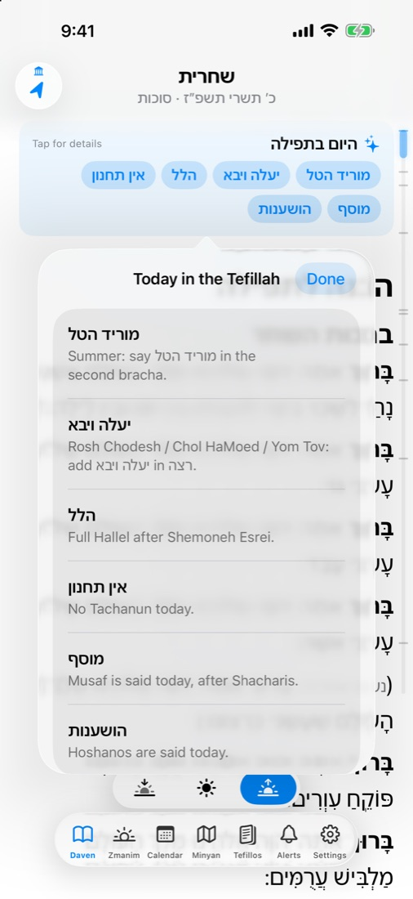
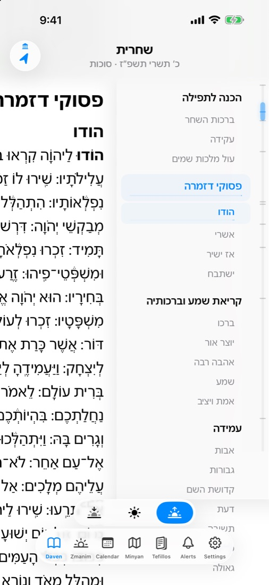
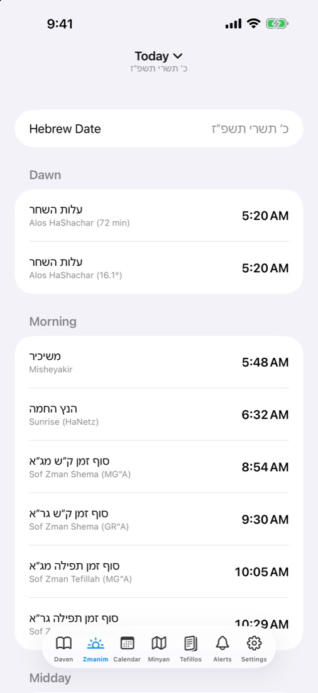
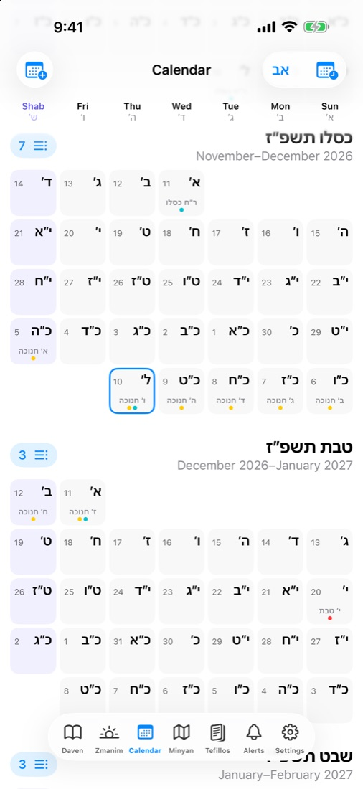
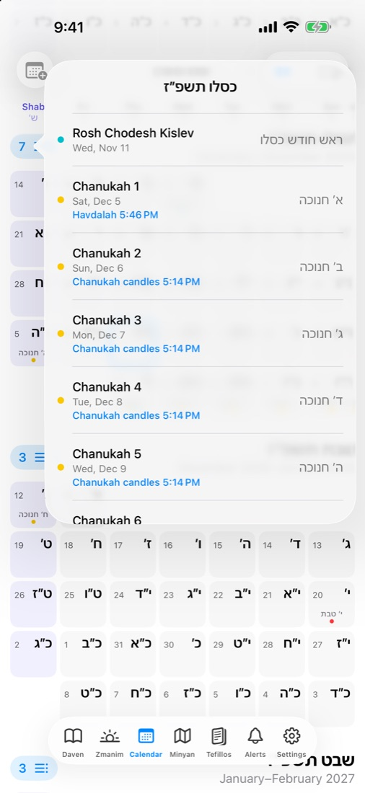
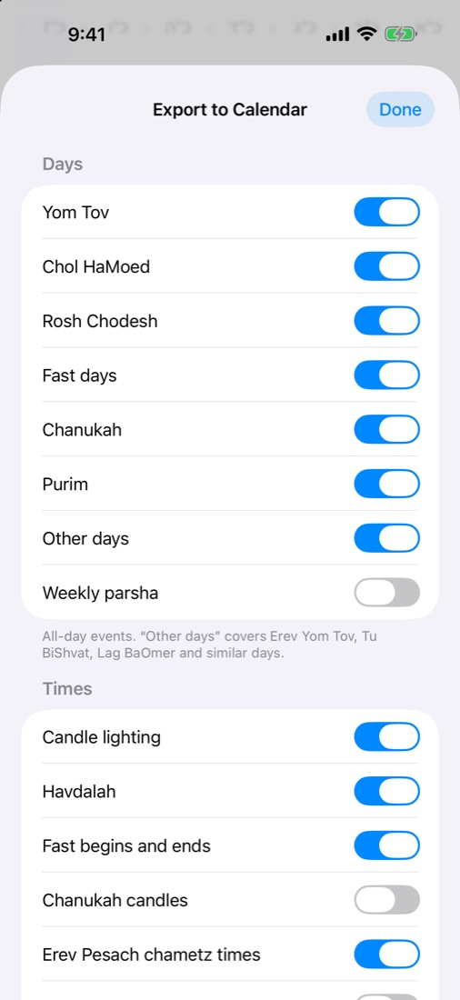
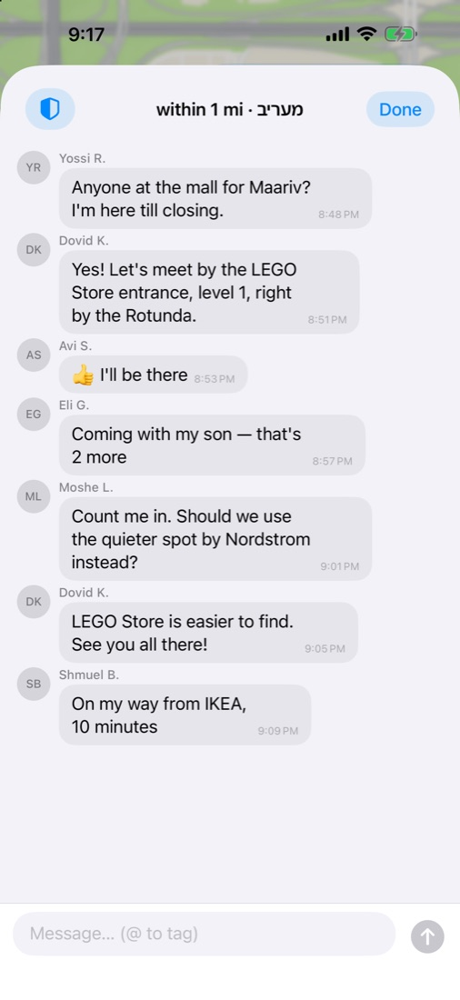

A siddur that knows what day it is.סידור שיודע איזה יום היום
Siddur opens to the right tefillah for right now, with today's additions already in place and the lines you don't say today left out. No more flipping, no more guessing.
Ashkenaz · Sefard · Ari · Edot HaMizrach — iPhone and iPad


It already knows what's different today.
Rosh Chodesh, Chol HaMoed, Chanukah, a fast day, the Aseres Yemei Teshuvah — Siddur works it out from the date and where you are, and sets the text for you.
- A card at the top says what changes today. Tap it for a short explanation.
- Lines not said today are hidden — or shown dimmed, if you prefer.
- Hallel, Musaf, Hoshanos and the Torah reading appear on the days they belong.
- For 30 days after mashiv haruach or tal umatar changes, a gentle reminder sits by the line.

Jump to any part in one move.
A slim rail on the edge shows where you are. Tap it to see every section and part of the tefillah, or drag it to fly through the text.
- Pinch to make the text bigger or smaller — it re-flows as you go.
- Clear Hebrew fonts, with or without nekudot.
- The right tefillah opens by itself for the time of day.

Instructions in plain sight — and in English.
The small print of a siddur becomes clear notes in the text. Tap any note to read it in English.
- Choose how much to see: just directions, the halachos too, or everything.
- English translations from Sefaria, credited in the app.
- Works offline — every text is inside the app.


Zmanim for exactly where you are.
From alos to tzeis, worked out for your location. A Hebrew and civil calendar shows every Yom Tov, fast, Rosh Chodesh and the Omer.
- Tap any day for its zmanim.
- Candle lighting, havdalah, fast start and end, Chanukah lighting and Erev Pesach chametz times.
- Switch between Hebrew months (right to left) and civil months.
- Knows when you're in Israel, with two days of Yom Tov for visitors who keep them.


Put the Jewish year in your calendar — just the parts you want.
Export holidays, fasts and times to the Calendar app on your iPhone, iPad and Mac. Pick exactly what goes in: Yom Tov but not Rosh Chodesh, candle lighting but not havdalah, with or without alerts.
- Everything goes into its own "Siddur" calendar.
- Export again and it updates — nothing is added twice.
- English names, Hebrew names, or both.


Need a minyan? See who's nearby.
Tap "I'm Looking" and people around you see it on the map. A chat for everyone nearby lets you agree where to meet — by the LEGO Store, in the lobby, wherever works.
- Get an alert when a minyan forms near you.
- No account — just pick a display name.
- Report and block in every chat, with a human review of every report.

Tehillim, brachos and the rest, a search away.
Birkas HaMazon, Al HaMichya, Tefillas HaDerech, Krias Shema al HaMitah, Kiddush Levana, the Megillah and all of Tehillim. Search by name, by chapter number, or by words inside the text.
- Today's extras rise to the top, like Lulav and Hoshanos on Sukkos.
And all the small things
The details that make a siddur feel right.
Sefiras HaOmer
Tonight's count in Maariv, a reminder at tzeis, and a morning nudge if you haven't counted.
Toward Jerusalem
A compass that points to Har HaBayis and turns green when you face it.
Reminders
Zmanim, candle lighting, fasts and the Omer. Never during Shabbos or Yom Tov.
Four nusachim
Ashkenaz, Sefard, Ari and Edot HaMizrach, with your minhag for מוריד הטל and Hoshanos.
Light and dark
Easy on the eyes for Maariv, with your choice of colour.
Works anywhere
The texts are on your phone. Zmanim follow you when you travel.
Free. Really.
No ads, no subscriptions, no account, and nothing is locked. If Siddur helps you daven, you can leave a small tip in the app — it unlocks nothing, because everything is already yours.
Questions
Which nusach does Siddur have?
Ashkenaz, Sefard, Ari and Edot HaMizrach. Pick yours in Settings; you can change it any time.
How does it know what to say today?
From the Hebrew date and your location — including whether you're in Israel. It follows the standard rules for each addition, like יעלה ויבא, טל ומטר and Hallel. If something looks wrong, email us and we'll fix it.
I'm visiting Israel and keep two days of Yom Tov.
Turn on "Keep 2 Days Yom Tov" in Settings. The tefillos and the calendar follow it.
Does it work without internet?
Yes. Every tefillah is inside the app. Only the minyan map and chat need a connection.
Where do the texts come from?
From Sefaria, under their open licenses. Each edition is credited in the app.
What do you do with my data?
The siddur, zmanim and calendar never leave your phone. Only the minyan features send anything, and only what they need. See the privacy policy.